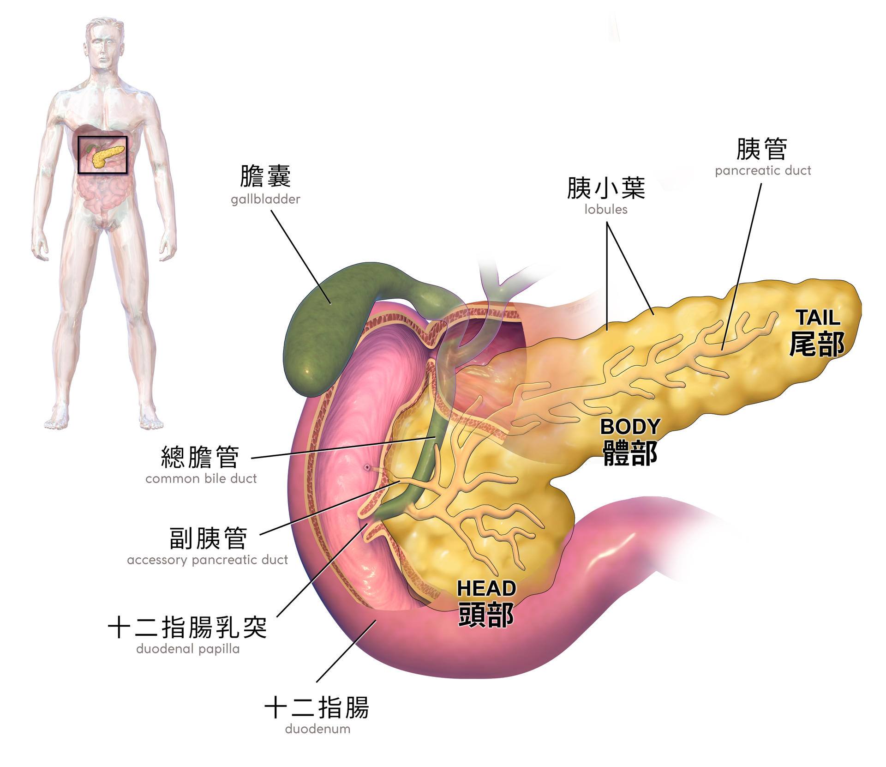
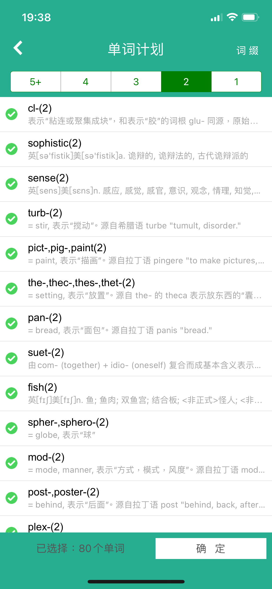
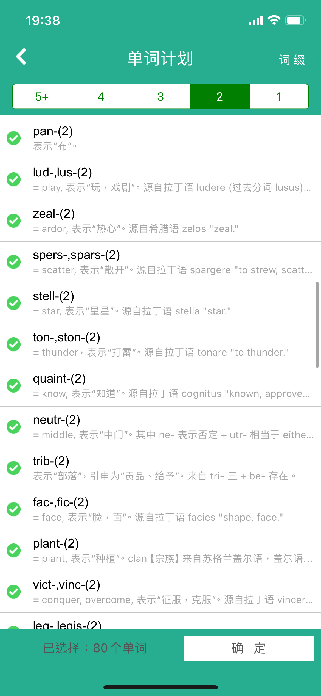
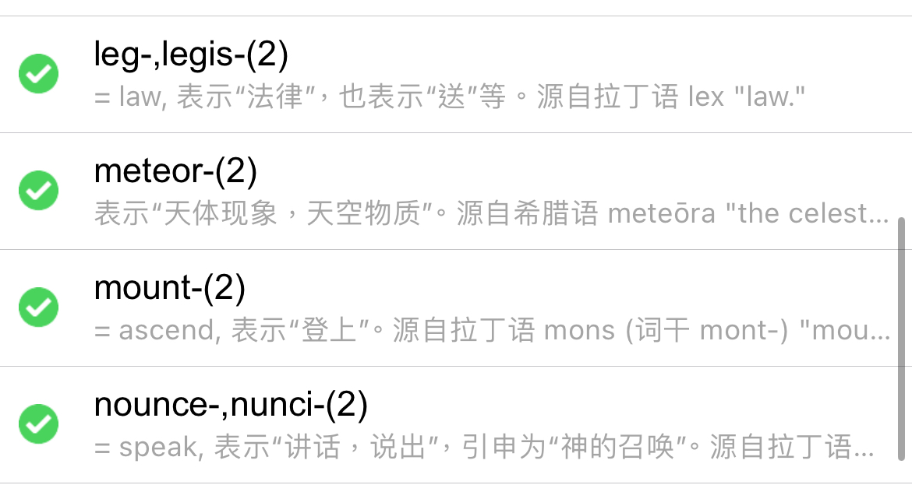
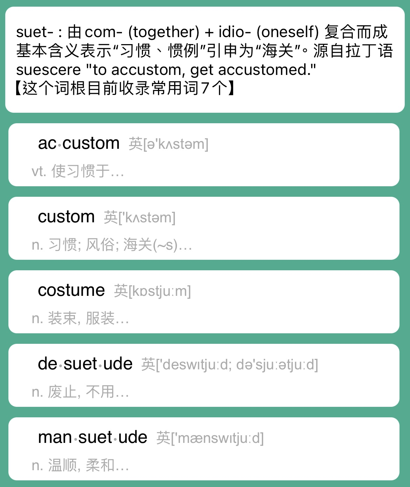
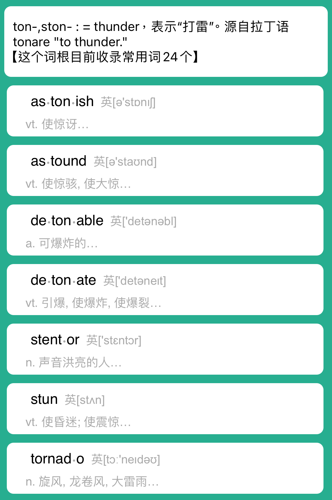
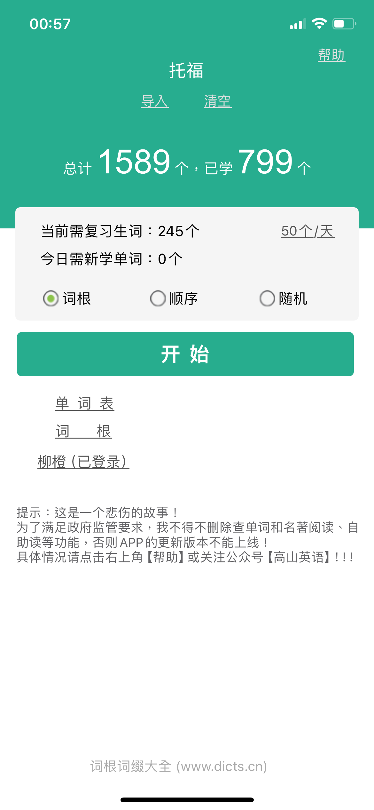

抹了抗生素MUPIROCIN OINTMENT好些了，开始玩神界原罪2（原神，启动！）
stit-, stitut-: set up, place建立，放（前几天背的了，但是因为很熟悉就没整理这个词根）
- superstitious迷信的（放在一切之上的），superstition迷信 = super-超过 + stit-放
- constitution = con-一起 + 放 = 放在一起 = 构成，宪法
- institute = 放进去 = 设立 = 机构，创立，制定
- substitute = 在下面放着 = 代替 = 代理，代理人
- prostitute = pro-前面 + st-站 = 站在前面的 = 妓女（站街妹） 这个词根可以看etymonline的解释，比如institute和prostitute，其实都解释为站(st-)而不是放(stit-)。
magn-, magnes-: 来自希腊🇬🇷地名Magnesia，这个地方产出了磁铁矿和氧化锰矿两种黑矿（得到了magnet和manganese，本来只是用阴阳性区分），后来产出氧化镁白矿（得到了magnesium）
- magnet（磁性只有铁磁和亚铁磁物质）
- magnesium镁（无磁性，别联想，12Mg）
- manganese词根是mangan-锰（无磁性，25Mn）
- 蒙古人是Mongol🇲🇳
- manganese词根是mangan-锰（无磁性，25Mn）
为什么insulin，胰岛素的词根是——
- insul-, isol-: island来自拉丁语insula岛屿🏝️
- insular岛的，与世隔绝的，保守的
- insulate使隔绝；隔离
- isolable可孤立的
- isolate孤立，单独考虑
- island
- isle
？

上图，胰脏/胰腺/panceras /ˈpæŋkriəs/，是脊椎动物具有外、内分泌功能的腺体。
外分泌由腺泡、连通肠腔的导管组成；内分泌是胰岛组成的，胰岛如下图所示。

A biologist named Paul Langerhans identified cells in an area of the pancreas which he described as little islands. Later on, it was discovered that within these "little islands" insulin was made. The islands are named islets of Langerhans, and the naming of insulin is derived from the Latin word insula, referencing the insulin producing islets of Langerhans.
胰岛（pancreatic islet）又称朗格汉斯岛（德语：Langerhans-Inseln、英语：islet of Langerhans），是胰脏里的球形细胞团（上图一整个），零散分布于胰脏外分泌部腺泡之间而状似孤岛，其结构由一群分泌激素的细胞（内分泌细胞）所组成，因德国病理学家保罗·兰格尔翰斯（Paul Langerhans）1869年发现而得名。
tort-: twist
- 原来乌龟的tortoise是这个词根（这是辱龟🐢！）/ˈtɔːrt̬əs/
- 因为乌龟脚趾扭曲得名。
- 尽管turtle 和 tortoise 在某些语境下可以互换使用，但从动物学的角度来看，它们有明显的区别，turtle 指代水生龟类，而 tortoise 指代陆生龟类。
- contort vs. distort扭曲
- "contort" 更强调形状或者身体的变形，而 "distort" 更强调对事物真实性或形状的歪曲或误导。
- extort
- retort
- tortile vs. tortuous扭曲的
- "tortile" 更多地描述物体的形状，暗示它的卷曲或弯曲；而"tortuous" 则更多地描述抽象的概念，暗示路径、过程或思想等的曲折、复杂或困难。
- torture = 扭曲别人 = 折磨
- torch火把
- torque转矩？
- 原来乌龟的tortoise是这个词根（这是辱龟🐢！）/ˈtɔːrt̬əs/
crust: 壳
- crustacean甲壳纲
dent: tooth牙齿（齿状）拉丁语dens
aqua-: water水💦，这是个好词根，以前从来没意识到过
- aquatic水生的水中/上的；水生生物，aquatic sports水中/上运动
- aquarium水族馆，水草缸
- terrarium养育箱
- -arium地点场所




saturate渗透，浸透，satur(fill灌满)
penetrate穿透，打入，penetr(put or get or enter into进入)
- penetr-: put or get or enter into进入
- penetrable可穿透的
- penetrating尖锐的，伸入深的，了解透的
- neutr- : middle中间 = ne-否定 + utr-(either) = 不在任何一边，表示中间状态。拉丁语uter(either of two)
- neuter阉割
- "castrate" 更侧重于描述手术过程或行为，尤其是针对动物的阉割；而"neuter" 则更通用，可以用于动物、植物甚至是语言等领域，指的是中性化或者中性状态。
- neutron中子（中性的）
- neuter阉割
- vict-, vinc-: conquer, overcome征服，克服
- convict = con-全部 + vict-征服 = 宣判有罪
- convince = 使相信，两个同词根同词缀的动词
- evict，另一个驱逐来了
stell-: star星星来自拉丁语stella，终于学到这个词根了！
- stellar星球的，杰出优秀的
- interstellar星际的
- stellate vs. stellated vs. stelliform星形的

- stellify使成星状/明星
- stellar星球的，杰出优秀的
plumb-: lead铅，来自拉丁语blumbum(lead铅)
- plumb垂直的，来自plumb line铅垂线，线下面挂个plummet铅垂
- plummet铅垂（暴跌）
- plumber水管工，因为以前自来水管多为铅管，跟铅打交道
zeal-: ardor激情，热心zealous jealous 热情 妒忌/嫉妒都是这个词根
- zealous热情
- jealous = 热心想得到但得不到
- zealous热情的
trib-:= tri-三 + be-存在 = 部落，引申为贡品/给予
- distribute = 分开给
leg-, legis-: law法律
- legacy的词根是这个！
- delegacy就变成了代表团，delegate委托
- legislate立法
- lat-: bring out带出拿出
- legit
- legist
- legate
- privilege也是这个词根！= priv(single, alone单个) + leg-法律 = 有个人法律 = 特权；给特权 。。。
- mount-: ascend登上
- surmount = sur-超过 + mount-山 = 翻过山 = 战胜，超越，克服
- paramount = para-半类似 = 类似高山 = 最高的
- nounce-, nunci-: speak, 引申神的召唤，拉丁nuntius就是announcing
- renounce，宣布放弃，宣布决裂，宣布断绝。re这里就是反，后，回的意思，不一定总是再
- pronounced = pronounce(发音，宣布)d = 宣布过的事、发过的音 = 显著的，表达明确的
onym-: name又来了，源自希腊语onoma, onuma"name"
- acronym
- onymous
- anonymous
- allonym 这个看一看，随便列一下就行
millennia一千年narian千禧年
- mill-千 + enn-年
pig-, pict-, paint-: paint描画，pig！
- pigment色素，颜料🎨！
fend-, fend-: strike打击
- fence篱笆，剑术
- fensing围墙，剑术
posthumous死后的，遗腹的
cl- glu-胶
- clumsy笨拙的
- cluster
quaint-: know only2
- acquaint
- quaint稀奇的，古朴典雅的
lus-, lud-: play玩
- elude
- illusion delusion
plant种植
- transplant移植好词
- clan【宗族】来自苏格兰盖尔语，盖尔语字母p不能用做首字母，因而用字母c代替。
turb: stir搅动
- turbulent
pan-布
- pane窗玻璃
- pan-: bread面包
- companion = 一起面包 = 同伴
mim-: imitate模仿
- mime哑剧，滑稽戏；模拟表演verb
- mimetic模拟的
merg-, mers-: sink居然是沉没
- submerge淹没，浸没，很反直觉
过敏就是hypersensitive
disperse分散的sparse稀疏的spers-, spars-: scatter
voc-, vok-,vouc-,vow-,voic-: = call voice, 表示"叫喊，声音"。源自拉丁语 vox "voice" vocare "to call."


